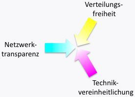

Dieses Kapitel erläutert die abstrakten Beweggründe für die (Weiter-)Entwicklung der Roblet®-Technik. Konkreter wird es dann in der Übersicht.
Wollen Sie lieber gleich etwas "hacken", so können Sie auch sofort zum Hello-World!-Beispiel gehen.
Auf die Effizienz kommt es an. Die Roblet®-Technik hat schon immer selbst bewährte Technik eingesetzt und neue Ideen nur hinzugefügt. Aber für die Autoren der Roblet®-Technik ist ein wesentliches Kriterium bei der Entwicklung die Effizienz im Einsatz. Die Effizienz soll sich möglichst überall zeigen - nicht nur in Form von schönen kurzen verständlichen Quellen.
Das Effizienzdreieck verteilter Systeme

Das Effizienzdreieck verteilter Systeme wird in allen Projektphasen, d.h. beim Entwurf, der Entwicklung, dem Test, der Inbetriebnahme, der Wartung, der Weiterentwicklung usw., gebildet durch:
-
Verteilungsfreiheit bei der Zuordnung von Funktionalität
Je freier Funktionalität in einem verteilten System zugeordnet werden kann, um so besser. Denn einerseits sollten verteilt laufende Komponenten möglichst viel (spezifische) Funktionalität haben1 aber andererseits ist genau das normalerweise der Albtraum einer jeden Organisation, eben wenn es um die genannten Projektphasen geht.
-
Technikvereinheitlichung für die verteilte Anwendung
Wo verschiedene Techniken zum Einsatz kommen müssen, damit eine Anwendung produktiv werden kann, liegen störende Brüche vor. Diese Brüche stören in allen Projektphasen. Produktivitätsbeeinflussend sind das Erstellen, Verpacken und Verteilen von Komponenten ebenso wie das Anpassen auf das jeweilige Zielsystem und das Starten, Überwachen und notfalls unbedingte Abbrechen einzelner oder aller Komponenten einer Anwendung - auch wenn dafür Werkzeuge zur Verfügung stehen (denn auch die brauchen Pflege).
Ideal ist, wenn es gar keine Technikbrüche gibt. Eine Anwendung mit all ihren Komponenten sollte in nur einer Programmiersprache unter einem beliebigen Betriebssystem mit einem einzigen Compiler nur einmal kompiliert werden müssen, um dann unter einem beliebigen Betriebssystem und einem beliebigen Prozessor zum Laufen gebracht werden zu können. Auf Grund der sprunghaften Entwicklung der Hardware läßt sich das heute in schon sehr vielen Bereichen verwirklichen.
-
Netzwerktransparenz inklusive Datensicherheit
Sowohl beim Verteilen von Komponenten einer Anwendung als auch wenn sich die Komponenten dann miteinander unterhalten, ist eine zuverlässige Kommunikation von größter Bedeutung. Zuverlässig bedeutet dabei korrekt und in keiner Weise durch Dritte mißbraucht.
(Physische) Netzwerke sind prinzipiell nicht zuverlässig. Sie sind weder perfekt stabil noch sicher. Es bedarf stets passender Kommunikationssoftware, um Netzwerkschwankungen oder Einflüsse Dritter auszugleichen.
Idealerweise verbirgt eine Technik sämtliche Netzwerkfehler oder Timeout-Situationen. Die gewünschte Kommunikation sollte solange aufgebaut bzw. wiederhergestellt werden, bis das von den Komponenten einer Anwendung explizit nicht mehr gewünscht ist.
Die Werkzeuge zur Kommunikation sollten derart sein, daß für den Entwickler kaum Unterschiede zwischen lokalen und fernen Komponenten sichtbar sind. Einziger Unterschied sollten die je nach Netzverfügbarkeit entstehenden Antwortzeiten sein.
Die Roblet®-Technik setzt das Effizenzdreieck auf praktische Weise um. Dabei wird spezifische, verteilte Funktionalität durch das Versenden und Ausführen von parametrisierten Programmstücken, den Roblets®, erreicht. Die Technikvereinheitlichung wird durch den konsequenten Einsatz von Java™ umgesetzt. Die Bibliotheken der Roblet®-Technik2 bringen die Netzwerktransparenz und behandeln sämtliche Aspekte der Kommunikation.
Verwendet werden dazu erprobte Techniken, die milliardenfach genutzt, Teil der Standard-Bibliotheken von Java™3 sind. Darüber hinaus kommen teilweise völlig neue Konzepte zum Tragen, die im Rahmen des Einsatzes der Roblet®-Technik entstanden und die allein durch die Grundidee des Verschickens von parametrisierten Programmstücken erst praxistauglich werden.
Java™
Erreicht wird die außerordentliche Effizienz der Roblet®-Technik im Grunde durch konsequente Ausnutzung grundlegender Eigenschaften von Java™:
- Einmal kompilierte Software (kurz: Code) läuft in jeder JVM (Java™ virtual maschine),
- Daten, die in einer JVM erzeugt wurden, werden von jeder anderen JVM sofort verstanden,
- die Standard-Bibliothek von Java™ ist plattformübergreifend einheitlich im Verhalten,
- für eine Hochsprache mit Objektorientierung und integrierter Ausnahmebehandlung ist Java™ vergleichsweise spielend erlernbar,
- für Java™ gibt es eine unüberschaubare Anzahl weiterer Bibliotheken und Werkzeuge, um nahezu beliebige Dinge zu machen und
- Java™ wird vermutlich von mehr Entwicklern verstanden, als jede andere Programmiersprache.
Daraus leitet sich ab, daß die Kompilation an einem beliebigen Ort unter einem beliebigen Betriebssystem und Prozessor durchgeführt werden kann. Die Definition von Java™ garantiert dabei, daß der Code und die Daten überall laufen bzw. verstanden werden. Diese Tatsache und dazu der Fakt, daß Java™ tatsächlich auf so ziemlich allen Plattformen zu finden ist, ermöglicht extrem heterogene Systeme4.
1 wie z.B. bei (mobilen) Agentensystemen gewünscht
2 das Roblet®-Development-Kit (RDK)
3 das Java™-Development-Kit (JDK) oder sogar die Java™-Runtime-Environment (JRE)
4 Anfangs wurde auch untersucht, ob nicht eher .NET zum Einsatz kommen sollte. Jedoch hat die damalige Verbreitung auf den verschiedenen Betriebssystemen dies nicht zugelassen. Dazu kam noch, daß die Zielsysteme oftmals vermutlich für eine .NET-Umgebung eh zu klein gewesen wären. Heute scheint klar, daß gewisse Möglichkeiten des Verschickens von Code in .NET nicht oder nicht so einfach gegeben sind, wie es in Java™ gegeben ist. Damit wäre die Technik dann im Grunde nicht auf .NET portierbar.